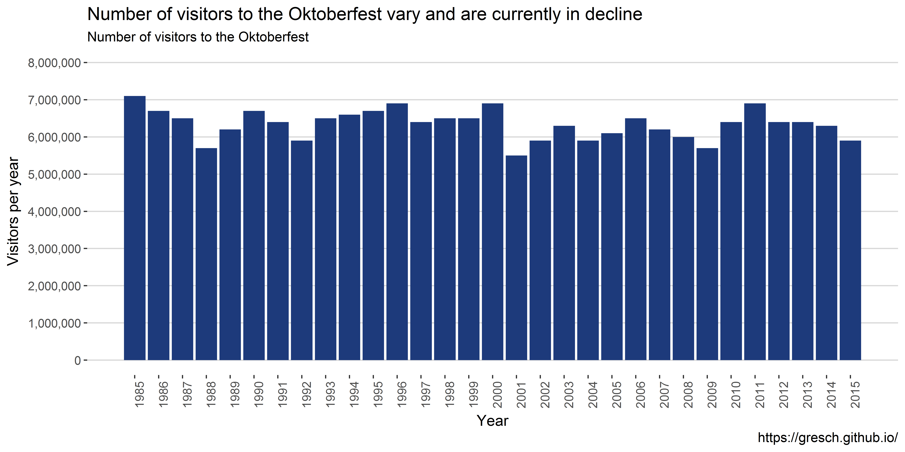
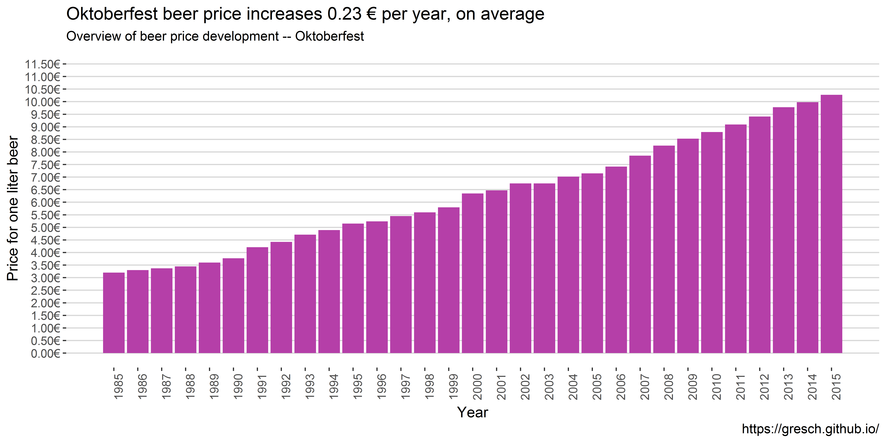
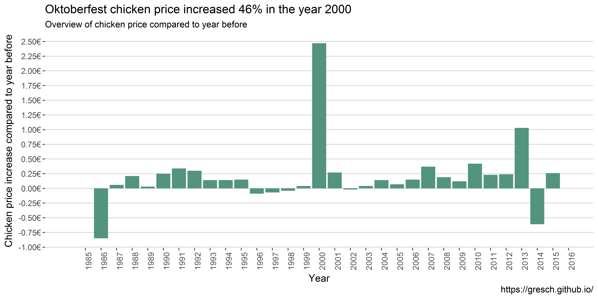

München, Löwenbräu-Festhalle, Oktoberfest 2012 (03).jpg, CC BY 3.0
Introduction
Who does not know it, the Oktoberfest in Munich, Germany, or at least heard about it? In this brief analysis I would like to show some statistics and data visualizations about the Oktoberfest.
My motivation to perform the analysis is firstly to explore an interesting data set, but also to test my hopefully new publishing workflow involving (1) R Notebook and (2) blogdown. One goal is to make the analysis available on GitHub and also use the same file for a Blog post.
Setup and data overview
The data is an open data set from the Munich Opendata portal.
# load the tidyverse and other libraries
library("tidyverse")
library("knitr")
library("scales")
library("ggthemes")
# constants
data_file <- 'https://www.opengov-muenchen.de/dataset/8d6c8251-7956-4f92-8c96-f79106aab828/resource/e0f664cf-6dd9-4743-bd2b-81a8b18bd1d2/download/oktoberfestgesamt19852015.csv'
r_90_d <- theme(axis.text.x = element_text(angle = 90, hjust = 1))
caption <- "https://gresch.github.io/"
my_theme <- theme_hc()
cp <- c("#1d3a7b", "#b53fa8", "#224dce", "#529480", "#23f2c0") # color palette "Song of the Unexpected Color Palette" http://www.color-hex.com/color-palette/29752# load the data
data <- read_csv(data_file)
# translate variable names to English
data <- rename(data, year = jahr,
duration_days = dauer,
visitor_year = besucher_gesamt,
visitor_day = besucher_tag,
beer_price = bier_preis,
beer_sold = bier_konsum,
chicken_price = hendl_preis,
chicken_sold = hendl_konsum)
# unify measures
data$visitor_year <- data$visitor_year * 1000000
data$visitor_day <- data$visitor_day * 1000
data$beer_sold <- data$beer_sold * 100# create table overview
kable(summary(data))| year | duration_days | visitor_year | visitor_day | beer_price | beer_sold | chicken_price | chicken_sold | |
|---|---|---|---|---|---|---|---|---|
| Min. :1985 | Min. :16.00 | Min. :5500000 | Min. :344000 | Min. : 3.200 | Min. :4869800 | Min. : 3.920 | Min. :351705 | |
| 1st Qu.:1992 | 1st Qu.:16.00 | 1st Qu.:6050000 | 1st Qu.:369000 | 1st Qu.: 4.565 | 1st Qu.:5236500 | 1st Qu.: 5.180 | 1st Qu.:491136 | |
| Median :2000 | Median :16.00 | Median :6400000 | Median :394000 | Median : 6.350 | Median :5761400 | Median : 7.850 | Median :595580 | |
| Mean :2000 | Mean :16.23 | Mean :6341935 | Mean :391129 | Mean : 6.323 | Mean :6053368 | Mean : 7.080 | Mean :590713 | |
| 3rd Qu.:2008 | 3rd Qu.:16.00 | 3rd Qu.:6550000 | 3rd Qu.:406000 | 3rd Qu.: 8.050 | 3rd Qu.:6752650 | 3rd Qu.: 8.965 | 3rd Qu.:698850 | |
| Max. :2015 | Max. :18.00 | Max. :7100000 | Max. :444000 | Max. :10.270 | Max. :7922500 | Max. :11.100 | Max. :807710 |
The data set spans 31 years (31 observations) and eight variables that include:
- The year of the Oktoberfest
- The duration of the fest in days (duration_days)
- Visitors for each year (visitor_year)
- Mean visitors per day for each year (visitor_day)
- Mean price for one beer (1 Liter) for each year (beer_price)
- Whole amount of beer sold for each year in Liter (beer_sold)
- Mean price for one chicken for each year (chicken_price)
- Whole amount of chickens sold for each year (chicken_sold)
Data exploration and analysis
I explore the observations of some of the variables mentioned above to get a better understanding of the data. Usually, histograms are a perfect tool to explore data’s distribution and to find out interesting details. In this analysis I show how the data progressed over the years 1986-2015 using a barchart.
Visitors per year
# show visitors per year
ggplot(data) +
geom_bar(aes(year, visitor_year),
stat = "identity",
fill = cp[1]) +
labs(
title = "Number of visitors to the Oktoberfest vary and are currently in decline",
subtitle = "Number of visitors to the Oktoberfest",
caption = caption,
x = "Year",
y = "Visitors per year"
) +
scale_y_continuous(
labels = scales::comma,
limits = c(0, 8000000),
breaks = seq(0, 8000000, by = 1000000)) +
scale_x_continuous(breaks = seq(1985, 2015, by = 1)) +
r_90_d + my_theme Over the 31 years, on average, 6,341,935 people visited the Oktoberfest each year. What is interesting to note is that there was a major decline in visitors just after 9/11 in year 2001 – Oktoberfest starts usually end of September each year. The trend of yearly visitors looks the same as for the average daily visitors.
# show divergence of visitors per year from the mean
ggplot(data) +
geom_bar(aes(year, visitor_year - mean(visitor_year)),
stat = "identity",
fill = cp[1]) +
labs(
title = "Number of visitors to the Oktoberfest vary and are currently in decline",
subtitle = "Divergence of visitors compared to the mean ",
caption = caption,
x = "Year",
y = "Divergence from mean visitors per year"
) +
scale_y_continuous(
labels = scales::comma,
limits = c(-1000000, 1000000),
breaks = seq(-1000000, 1000000, by = 100000)
) +
scale_x_continuous(
breaks = seq(1985, 2015, by = 1)) +
r_90_d + my_themeIn this graph it is even better to see that in 1985 the most people visited the Oktoberfest. Then there is a stark decline of visitors with 1988 hitting the bottom with ~600,000 visitors less than average. After that the number of visitors increased until 2001 or nine-eleven.
Beer price development
# show beer price development
ggplot(data) +
geom_bar(aes(year, beer_price),
stat = "identity",
fill = cp[2]) +
labs(
title = "Oktoberfest beer price increases 0.23 € per year, on average",
subtitle = "Overview of beer price development -- Oktoberfest",
caption = caption,
x = "Year",
y = "Price for one liter beer"
) +
scale_y_continuous(
labels = scales::dollar_format(suffix = "€", prefix = ""),
limits = c(0, 11.5),
breaks = seq(0, 11.5, by = 0.5)) +
scale_x_continuous(
breaks = seq(1985, 2015, by = 1)) +
r_90_d + my_theme
Not surprisingly, the beer price increased over the years. starting in 1985 with 3.20€ and hitting 10.75€ in 2015. That would be an average yearly increase of \[(10.27 - 3.20) / 30 = 0.2356667\]
# show beer price increase based on former year
data %>%
mutate(increase = beer_price - lag(beer_price, default = NA)) %>%
ggplot() +
geom_bar(aes(year, increase),
stat = "identity",
fill = cp[2]) +
labs(
title = "There were steep beer price increases in 1991, 2000, 2007, and 2008 compared to the former years",
subtitle = "Beer price increase compared to former year -- Oktoberfest",
caption = caption,
x = "Year",
y = "Beer price increase compared to year before"
) +
scale_y_continuous(
labels = scales::dollar_format(suffix = "€", prefix = ""),
breaks = seq(-10, +10, by = 0.05)) +
scale_x_continuous(
breaks = seq(1985, 2016, by = 1),
limits = c(1985, 2016)) +
r_90_d + my_themeInterestingly, in 1991 there was, on average, a major increase of 0.44€ per beer compared to 1990. Why would that be? The following years the increase levels off until 1996 to rise again with the year 2000 showing a major increase of 0.55€ compared to 1999, which is more than double than the average increase over time.
Beer sold over the years
ggplot(data) +
geom_bar(aes(year, beer_sold / duration_days),
stat = "identity",
fill = cp[3]) +
labs(
title = "Regardless of fewer visitors in recent years, the amount of sold beer is higher than in the nineties",
subtitle = "Overview of beer sold in Liter per day, on average -- Oktoberfest",
caption = caption,
x = "Year",
y = "Beer sold per day (Liter)"
) +
scale_y_continuous(
labels = scales::comma,
breaks = seq(0, 500000, by = 50000)) +
scale_x_continuous(
breaks = seq(1985, 2016, by = 1),
limits = c(1985, 2016)) +
r_90_d + my_themeOn average, each year on each day 372,837 liters of beer was sold. The bar chart looks multimodel with a peak in 1999 and a low in 2001 (where less people visited the Oktoberfest). Since then, the amount of beer sold is increasing.
ggplot(data) +
geom_bar(aes(year, beer_sold / duration_days / visitor_day),
stat = "identity",
fill = cp[3]) +
labs(
title = "On average, Oktoberfest visitors drink more beer -- over 1.2 Liter in 2015",
subtitle = "Overview of beer sold in Liter per day per visitor, on average",
caption = caption,
x = "Year",
y = "Beer sold per day (Liter)"
) +
scale_y_continuous(
labels = scales::comma,
breaks = seq(0, 1.5, by = 0.1)) +
scale_x_continuous(
breaks = seq(1985, 2015, by = 1),
limits = c(1984, 2016)) +
r_90_d + my_theme
Chicken price development
# show Chicken price development
ggplot(data) +
geom_bar(aes(year, chicken_price),
stat = "identity",
fill = cp[4]) +
labs(
title = "Oktoberfest chicken price increases over the years with a steep increase in 2000",
subtitle = "Overview of chicken price",
caption = caption,
x = "Year",
y = "Chicken price"
) +
scale_y_continuous(
labels = scales::dollar_format(suffix = "€", prefix = ""),
limits = c(0, 11.5),
breaks = seq(0, 11.5, by = 1)) +
scale_x_continuous(
breaks = seq(1985, 2015, by = 1)) +
r_90_d + my_themeThe chicken price increased over the years until 1995 to fall slightly. However a huge increase was in the year 2000. The price was increased by 2.47€ more than twelve times the average price increase. Starting in 1985 with 4.77€ and hitting 10.75€ in 2015. That would be an average yearly increase of \[(10.75 - 4.77) / 30 = 0.199333\]
# show chicken price increase based on former year
data %>%
mutate(increase = chicken_price - lag(chicken_price, default = NA)) %>%
ggplot() +
geom_bar(aes(year, increase),
stat = "identity",
fill = cp[4]) +
labs(
title = "Oktoberfest chicken price increased 46% in the year 2000",
subtitle = "Overview of chicken price compared to year before",
caption = caption,
x = "Year",
y = "Chicken price increase compared to year before"
) +
scale_y_continuous(
labels = scales::dollar_format(suffix = "€", prefix = ""),
breaks = seq(-10, +10, by = 0.25)) +
scale_x_continuous(
breaks = seq(1985, 2016, by = 1),
limits = c(1984, 2016)) +
r_90_d + my_theme
Interestingly, in 1986 the price for chicken dropped four times the average with then a steady increase until 1986. Then in the year 2000 the aforementioned rise of 2.47€. Also, in 2013 we saw a major price increase compared to 2012, namely 1.03€.
Conlusion
This was an analysis of available data of the Oktoberfest by Munich Opendata portal. In brief I learned that
- the total numbers of visitors are in decline
- in the years were terrorism attacks happened the visitors dropped, esp. in 2001
- the price for one Liter of beer increases, esp. in the year 2000 with an increase of 0.55€
- the total amount of beer sold increases
- alarmingly, the amount of beer per visitor also increases after 1997; on average on visitor drinks over 1.2 liters of beer per day
- the price for chicken doubled compared to 1999
- that there was a 46% price increase for a chicken in the year 2000!
Of course this analysis is limited by the amount of data available for such analyses. Averaging over already aggregated data allow limited insights and statistics need to be interpreted carefully.
From an approach to data science (or data analysis with R) I learned that
- even well structured (ggplot) code can get messy
- an interesting question to begin with would streamline the analysis
- I am a long cry away from story telling with data
- I was unsuccessful to globally set figure width in the R Notebook
If you have any feedback on the analysis, the approach or tools, please feel free to contact me.